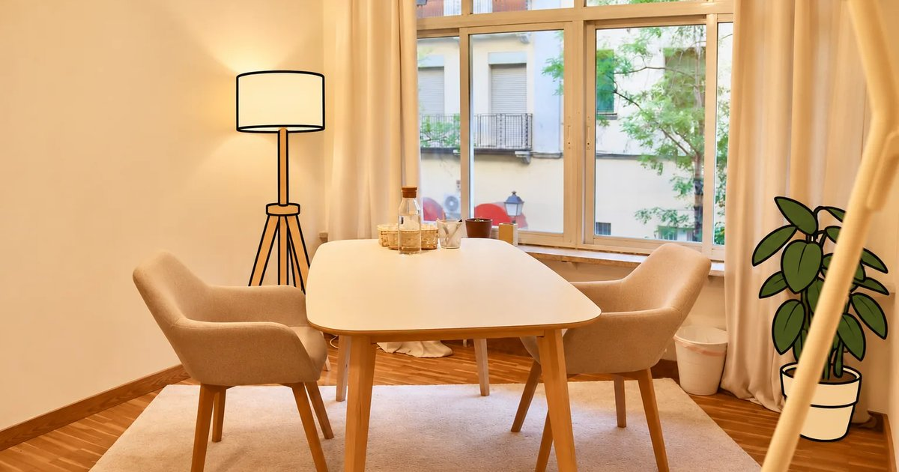

Icono e imagen al compartir
Página de prueba: todavía no está puesto en la web. Así se vería cuando alguien mande el enlace o abra la página.
1. Al mandar el enlace por WhatsApp
La tarjeta de vista previa con la foto del despacho (la primera de presencial), el título y la descripción de la portada.

Psicólogo en Madrid centro y online · Symploké
Psicólogo general sanitario en Madrid centro (Embajadores) y online. Ansiedad, depresión, pareja… Centro sanitario autorizado.
tupsicologoenmadrid.es
Mira, este está en Embajadores https://tupsicologoenmadrid.es/
10:42 ✓✓
2. El icono en la pestaña del navegador
A tamaño real (16 píxeles), con el navegador claro y oscuro. La segunda pestaña es cómo se ve hoy, sin icono.
Navegador claro
Navegador oscuro
3. En los resultados de Google (móvil)
Symploké
tupsicologoenmadrid.es
Psicólogo en Madrid centro y online · Symploké
Psicólogo general sanitario en Madrid centro (Embajadores) y online. Ansiedad, depresión, pareja… Centro sanitario autorizado.
4. Si alguien la guarda en la pantalla del móvil
Symploké
5. El icono a distintos tamaños
16
32
64
128
6. La imagen al compartir, entera
1200 × 630 píxeles, el tamaño que piden WhatsApp, Facebook y LinkedIn. Recortada un poco por arriba y por abajo respecto a la foto de presencial.